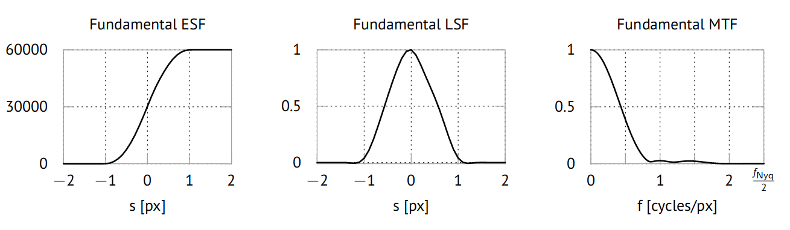

Module ctsimu.evaluation.test2D_WE_1
Test 2D-WE-1: Focus spot size
Any spatially extended focal spot leads to a spatially extended point spread function (PSF) on the detector and therefore to image blurring. In this test scenario, we check if Gaussian spot intensity profiles are correctly simulated by the software to lead to the expected image blurring, represented by certain expected MTF20 values that we calculate as described below.
This scenario defines two sub-tests: one with a Gaussian spot intensity profile with a standard deviation of σ1 = 8 µm (Spot 1), and a second one with σ2 = 24 µm (Spot 2). The following code example shows how to identify each subtest correctly when using the toolbox to run the evaluation.
from ctsimu.toolbox import Toolbox
Toolbox("2D-WE-1",
spot1 = "2D-WE-1_Spot1_metadata.json",
spot2 = "2D-WE-1_Spot2_metadata.json")
Our evaluation approach is to measure the edge spread function (ESF) across the edge of an ideal absorber (the same edge as used for ctsimu.evaluation.test2D_WE_2). In subsequent steps, we will calculate the line spread function (LSF) to evaluate the spot size and the modulation transfer function (MTF) to determine where the system's frequency transmission drops to 20% (MTF20 value). Rossmann et al., 1969, Jones et al., 1958.
The edge spread function (ESF) is simply the line profile across the edge. The center point c of the line profile is placed exactly in the center of the vertical part of the edge (see picture below). The starting point p0 and the end point p1 of the profile result from the line profile parameters: we choose a profile length of l = 100.1 px and a bin size (resolution) of r = 0.1 px. This results in a profile of N=1001 bins along the line across the edge. We choose a profile region that is w = 200 px wide.

Due to the pixel rasterization of the projection and the finite sampling of the line profile, we will lose frequency information even in the ideal case of a point source. We therefore use the ideal edge image from ctsimu.evaluation.test2D_WE_2 to determine the sampled LSF and MTF under the ideal assumption of a point source. This will give us the best LSF and MTF that are achievable with the given detector, edge tilt angle, and the chosen evaluation method, which means they represent our scenario's fundamental spread and transfer functions. These results are shown in the following picture.

A convolution of the fundamental ESF and LSF with the profile of a Gaussian spot will lead to the expected ideal ESF and LSF at finite spot sizes. Generally, this convolution has to be done using the point spread function (PSF), which, apart from amplitude normalization, is identical to the LSF when an isotropic Gaussian distribution of the spot's intensity is assumed. (Gopala Rao et al., 1967)
To calculate the analytical sampled LSF of an ideal non-rotated edge under a Gaussian spot with a standard deviation σ, we integrate the spot's intensity function along the full width of each bin of the line profile, assuming that the distribution is centered at s_\text{c}=\frac{N}{2} (with the number of bins N): \text{LSF}_\text{Gaussian, j} = A\cdot \int_{j-\frac{N}{2}}^{j+1-\frac{N}{2}} \text{e}^{-s^2/(2\sigma^2)} \text{d} s = A \cdot \sqrt{\frac{2}{\pi}}\sigma \cdot \left[\text{erf}\left(\frac{j+1-\frac{N}{2}}{\sqrt{2}\sigma} \right) - \text{erf}\left(\frac{j-\frac{N}{2}}{\sqrt{2}\sigma} \right) \right]. The parameter A is chosen such that the maximum of the LSF is normalized to a value of 1. The ideal expected LSF is then computed by the discrete convolution (assuming the number of bins N is an odd number) \text{LSF}_{\text{ideal}, j} = (\text{LSF}_\text{fundamental} \ast \text{LSF}_\text{Gaussian})_j = \sum_{k=0}^{N-1} \text{LSF}_{\text{fundamental}, k} \cdot \text{LSF}_{\text{Gaussian}, j-k+\frac{N-1}{2}}. In the scenario, the edge is located exactly halfway between source and detector. Therefore, no magnification of the point spread function (PSF) or line spread function (LSF) is to be expected, and the Gaussian spot size can be determined directly from the measured LSF without the need for scaling. In theory, it would be possible to use a deconvolution to remove the fundamental LSF from the measured LSF of a given simulated image such that only the shape of the spot intensity profile remains. However, deconvolution is an ill-posed problem, and it is only possible if all of our ideal assumptions are met by the simulation software. To avoid instabilities and the introduction of any additional errors, we therefore determine the expected spot sizes by Gaussian fits to the ideal LSF, i.e., from the convolution of fundamental LSF and Gaussian LSF that results from the above equation. Using a least-squares fit, we determine the expected ideal \tilde{\sigma} that are listed in the following table.
| Spot size | Expected LSF std. dev. | Expected MTF20 frequency |
|---|---|---|
| σ1 = 8 μm | \tilde{\sigma}_1 = 9.579(2)μm | MTF201 = 29.852 cycles/mm |
| σ2 = 24 μm | \tilde{\sigma}_2 = 24.552(1)μm | MTF202 = 11.770 cycles/mm |
The ideal MTF can be calculated either by multiplication of the fundamental MTF and the Gaussian MTF (as calculated from the Gaussian LSF), \text{MTF}_\text{ideal} = \text{MTF}_\text{fundamental} \cdot \text{MTF}_\text{Gaussian}, or by applying a Fourier transform to the ideal LSF. Apart from numerical artifacts, both results are identical; here, we use the second approach.
For each image to be measured, the MTF20 value is determined and compared to the MTF20 value of the ideal MTF. The MTF20 value is the frequency where the MTF drops to 20% of its maximum value. The expected values from our ideal MTFs are listed in the table above.
Classes
class Test2D_WE_1 (resultFileDirectory='.', name=None, rawOutput=False)-
CTSimU test 2D-WE-1: focal spot size.
Expand source code
class Test2D_WE_1(generalTest): """ CTSimU test 2D-WE-1: focal spot size. """ def __init__(self, resultFileDirectory=".", name=None, rawOutput=False): generalTest.__init__( self, testName="2D-WE-1", name=name, resultFileDirectory=resultFileDirectory, rawOutput=rawOutput) self.geometry = None self.analyticalIntensityProfileImage = None # analytical flat field self.analyticalEdgeImage = None # stores the analytically computed edge image (sharp image) self.analyticalEdgeImageFF = None # stores the analytically computed edge image, flat-field corrected (sharp image) self.results = [] self.results_idealPointSource = Test2D_WE_1_results() # Start point (x0,y0) and end point (x1,y1) for line profile: edgeAngle = 3 * (math.pi/180.0) # 3 deg edge rotation # point of origin for edge profile (i.e. profile center): edgeOrigin = Vector(0, 1) # start with unit vector pointing "down" edgeOrigin.rotate_2D_xy(edgeAngle) # rotate by edge angle edgeOrigin.scale(500.5 / math.cos(edgeAngle) / 2.0) # scale to half of visible edge length edgeOrigin = edgeOrigin + Vector(500.5, 500.5) # move to detector center #print("Edge origin:") #print(edgeOrigin) self.profileLength = 100.1 # pixels edgeDirection = Vector(self.profileLength/2.0, 0) edgeDirection.rotate_2D_xy(edgeAngle) self.p0 = edgeOrigin - edgeDirection self.p1 = edgeOrigin + edgeDirection #print("Line From p0:") #print(self.p0) #print("Line To p1:") #print(self.p1) self.profileWidth = 200 # pixels self.profileRes = 0.1 # pixels # Also, prepare the clipping rectangle for the analytical # calculation of the ideal edge image. In pixel coordinates. A = Vector( 0, 0, 0) B = Vector( 0, 300, 0) C = Vector(-300, 300, 0) D = Vector(-300, 0, 0) #A.rotate_2D_xy(edgeAngle) B.rotate_2D_xy(edgeAngle) C.rotate_2D_xy(edgeAngle) D.rotate_2D_xy(edgeAngle) self.clippingRectangle = Polygon(A, B, C, D) def prepare(self): """ Preparations before the test will be run with the images from the pipeline. """ if not isinstance(self.pipe, Pipeline): self.prepared = False raise Exception("Step must be part of a processing pipeline before it can prepare. Current pipeline: {}".format(self.pipe)) if len(self.subtests) > 0: if not self.prepared: # It doesn't matter which of the sub-scenarios we take here. # They all have the same geometry. self.jsonScenarioFile = "2D-WE-1_Spot1_2021-10-13v02r04dp.json" if(self.jsonScenarioFile is not None): self.scenario = Scenario(json_dict=json_from_pkg(pkg_scenario(self.jsonScenarioFile))) self.geometry = self.scenario.current_geometry() self.geometry.update() print("Computing an analytical image for an ideal point source...") self.analyticalIntensityProfileImage, self.analyticalEdgeImage = self.geometry.create_detector_flat_field_sphere(self.clippingRectangle) self.analyticalEdgeImageFF = copy.deepcopy(self.analyticalEdgeImage) self.analyticalEdgeImageFF.applyFlatfield(ref=self.analyticalIntensityProfileImage, rescaleFactor=60000.0) # Raise analytical images to maximum grey value of 60000 before saving them. # This rescaling does not affect the previous FF correction. self.analyticalIntensityProfileImage.renormalize(newMin=0.0, newMax=60000.0, currentMin=0.0, currentMax=1.0) self.analyticalEdgeImage.renormalize(newMin=0.0, newMax=60000.0, currentMin=0.0, currentMax=1.0) # Write analytical images: if self.rawOutput: self.analyticalIntensityProfileImage.saveRAW("{dir}/{name}_ideal_flat.raw".format(dir=self.resultFileDirectory, name=self.name), dataType="float32", addInfo=True) self.analyticalEdgeImage.saveRAW("{dir}/{name}_ideal_edge.raw".format(dir=self.resultFileDirectory, name=self.name), dataType="float32", addInfo=True) self.analyticalEdgeImageFF.saveRAW("{dir}/{name}_ideal_edge_corrected.raw".format(dir=self.resultFileDirectory, name=self.name), dataType="float32", addInfo=True) else: # TIFF self.analyticalIntensityProfileImage.save("{dir}/{name}_ideal_flat.tif".format(dir=self.resultFileDirectory, name=self.name), dataType="float32") self.analyticalEdgeImage.save("{dir}/{name}_ideal_edge.tif".format(dir=self.resultFileDirectory, name=self.name), dataType="float32") self.analyticalEdgeImageFF.save("{dir}/{name}_ideal_edge_corrected.tif".format(dir=self.resultFileDirectory, name=self.name), dataType="float32") print("Calculating the fundamental LSF and MTF from the ideal edge image...") # Calculate the edge spread function (using a line profile across the edge): self.results_idealPointSource.lineProfileGV, self.results_idealPointSource.lineProfilePos, stepsize = self.analyticalEdgeImageFF.lineProfile(x0=self.p0.x(), y0=self.p0.y(), x1=self.p1.x(), y1=self.p1.y(), width=self.profileWidth, resolution=self.profileRes) # Nyquist frequency determines center of MTF frequency range: self.results_idealPointSource.fnyq = 1.0 / (2.0*stepsize) nSamples = len(self.results_idealPointSource.lineProfileGV) #self.results_idealPointSource.MTFpos = numpy.linspace(start=0, stop=2*self.results_idealPointSource.fnyq, num=nSamples, endpoint=False, dtype=numpy.float64) # Make the profile positions symmetric: self.results_idealPointSource.lineProfilePos -= self.profileLength / 2 # Calculate the line spread function and MTF. self.results_idealPointSource.lineProfileSmoothed, self.results_idealPointSource.LSF, self.results_idealPointSource.LSF_windowed, self.results_idealPointSource.MTF, self.results_idealPointSource.MTFpos = MTF(positions=self.results_idealPointSource.lineProfilePos, ESF=self.results_idealPointSource.lineProfileGV) self.results_idealPointSource.lineProfileDelta = self.results_idealPointSource.lineProfileSmoothed - self.results_idealPointSource.lineProfileGV self.writeResultFile(subname="fundamental_spotPoint", results=self.results_idealPointSource) self.prepared = True else: raise Exception("Test 2D-WE-1: Please provide a JSON scenario description.") def prepareRun(self, i): if i < len(self.subtests): self.jsonScenarioFile = "2D-WE-1_Spot1_2021-10-13v02r04dp.json" if self.subtests[i] == "spot1": self.jsonScenarioFile = "2D-WE-1_Spot1_2021-10-13v02r04dp.json" elif self.subtests[i] == "spot2": self.jsonScenarioFile = "2D-WE-1_Spot2_2021-10-13v02r04dp.json" else: raise Exception("{key} is not a valid subtest identifier for test scenario {test}".format(key=self.subtests[i], test=self.testName)) results = Test2D_WE_1_results() # Get the Gaussian spot size and the pixel size from the JSON file: if self.jsonScenarioFile is not None: scenario = Scenario(json_dict=json_from_pkg(pkg_scenario(self.jsonScenarioFile))) results.nominalGaussianSigmaMM = scenario.source.spot.sigma.u.get() results.pixelSize = scenario.detector.pixel_pitch.u.get() results.nominalGaussianSigmaPX = results.nominalGaussianSigmaMM / results.pixelSize if self.subtests[i] == "spotPoint": results.nominalGaussianSigmaMM = 0 results.nominalGaussianSigmaPX = 0 else: # Create an ideal Gaussian LSF: nBins = len(self.results_idealPointSource.lineProfilePos) sigma = results.nominalGaussianSigmaPX results.ideal_LSF_Gaussian = numpy.zeros_like(a=self.results_idealPointSource.lineProfilePos, dtype=numpy.dtype('float64')) for j in range(nBins): s = self.results_idealPointSource.lineProfilePos[j] sLeft = s - self.profileRes sRight = s + self.profileRes results.ideal_LSF_Gaussian[j] = math.erf(sRight/(math.sqrt(2.0)*sigma)) - math.erf(sLeft/(math.sqrt(2.0)*sigma)) #gaussian((s+sNext)/2.0, 0, sigma, 1) # Normalize ideal LSF maximum to 1: idealLSFmax = numpy.amax(results.ideal_LSF_Gaussian) if idealLSFmax != 0: results.ideal_LSF_Gaussian /= idealLSFmax # Calculate convolution of ideal LSF of sharp image and Gaussian LSF: results.ideal_LSF_Convolution = numpy.convolve(a=self.results_idealPointSource.LSF, v=results.ideal_LSF_Gaussian, mode='same') convMax = numpy.amax(results.ideal_LSF_Convolution) if convMax != 0: results.ideal_LSF_Convolution /= convMax # Calculate ideal ESF as convolution of Gaussian with the ideal sampledESF: results.ideal_ESF_Convolution = numpy.convolve(a=self.results_idealPointSource.lineProfileGV, v=results.ideal_LSF_Gaussian, mode='same') convMax = numpy.amax(results.ideal_ESF_Convolution) if convMax != 0: results.ideal_ESF_Convolution /= convMax # Fit a Gaussian to central half of the data: fitParametersInitial = (0, sigma, 1) fitPositions = self.results_idealPointSource.lineProfilePos[int(nBins//4):int(3*nBins//4)] #fitData = results.ideal_LSF_Gaussian #[int(nBins//4):int(3*nBins//4)] #popt, pcov = optimize.curve_fit(f=gaussian, xdata=fitPositions, ydata=fitData, p0=fitParametersInitial) #print("- Ideal Gaussian Fit Mu: {}".format(popt[0])) #print("- Ideal Gaussian Fit Sigma: {}".format(popt[1])) #print("- Ideal Gaussian Fit A: {}".format(popt[2])) fitData = results.ideal_LSF_Convolution[int(nBins//4):int(3*nBins//4)] popt, pcov = optimize.curve_fit(f=gaussian, xdata=fitPositions, ydata=fitData, p0=fitParametersInitial) perr = numpy.sqrt(numpy.diag(pcov)) results.idealGaussianSigmaPX = popt[1] results.idealGaussianSigmaPXerror = perr[1] results.idealGaussianMuPX = popt[0] results.idealGaussianMuPXerror = perr[0] results.idealGaussianAmpPX = popt[2] results.idealGaussianAmpPXerror = perr[2] results.idealGaussianSigmaMM = results.pixelSize * results.idealGaussianSigmaPX results.idealGaussianSigmaMMerror = results.pixelSize * results.idealGaussianSigmaPXerror results.idealGaussianMuMM = results.pixelSize * results.idealGaussianMuPX results.idealGaussianMuMMerror = results.pixelSize * results.idealGaussianMuPXerror results.idealGaussianAmpMM = results.pixelSize * results.idealGaussianAmpPX results.idealGaussianAmpMMerror = results.pixelSize * results.idealGaussianAmpPXerror print("- Analytical LSF Fit Mu: {} +- {}".format(popt[0], perr[0])) print("- Analytical LSF Fit Sigma: {} +- {}".format(popt[1], perr[1])) print("- Analytical LSF Fit A: {} +- {}".format(popt[2], perr[2])) # Calculate MTF for Gaussian LSF and Convolution LSF: smoothedESF, retLSF, retLSFsmoothed, results.ideal_MTF_Gaussian, pos = MTF(positions=self.results_idealPointSource.lineProfilePos, LSF=results.ideal_LSF_Gaussian) smoothedESF, retLSF, retLSFsmoothed, results.ideal_MTF_ConvolutionFFT, pos = MTF(positions=self.results_idealPointSource.lineProfilePos, LSF=results.ideal_LSF_Convolution) results.ideal_MTF_Multiplication = self.results_idealPointSource.MTF * results.ideal_MTF_Gaussian if results.ideal_MTF_Multiplication[0] != 0: results.ideal_MTF_Multiplication /= results.ideal_MTF_Multiplication[0] print("Gaussian Spot Size: {} mm = {} px".format(results.nominalGaussianSigmaMM, results.nominalGaussianSigmaPX)) self.results.append(results) else: if len(self.subtests) == 0: raise Exception("Please provide keywords that identify which metadata file belongs to which subtest. Test {testname} accepts the following keywords: 'spot1' and 'spot2'.".format(testname=self.testName)) else: raise Exception("Number of provided image metadata files exceeds number of test runs ({expected}).".format(expected=len(self.subtests))) def writeSummaryFile(self, subname, results): summaryText = "Evaluation results for {testname} {subtest}\n".format(testname=self.testName, subtest=subname) summaryText += "=================================================\n\n" summaryText += "Fit results for gauss(x) = A * exp(-(x-mu)²/(2*sigma²))\n" summaryText += "Errors: 1 standard deviation\n" summaryText += "-------------------------------------------------------\n" summaryText += "measured: sigma [px] = {} +- {}\n".format(results.measuredGaussianSigmaPX, results.measuredGaussianSigmaPXerror) summaryText += " [mm] = {} +- {}\n".format(results.measuredGaussianSigmaMM, results.measuredGaussianSigmaMMerror) summaryText += "measured: mu [px] = {} +- {}\n".format(results.measuredGaussianMuPX, results.measuredGaussianMuPXerror) summaryText += " [mm] = {} +- {}\n".format(results.measuredGaussianMuMM, results.measuredGaussianMuMMerror) summaryText += "measured: A [px] = {} +- {}\n".format(results.measuredGaussianAmpPX, results.measuredGaussianAmpPXerror) summaryText += " [mm] = {} +- {}\n\n".format(results.measuredGaussianAmpMM, results.measuredGaussianAmpMMerror) summaryText += "analytical: sigma [px] = {} +- {}\n".format(results.idealGaussianSigmaPX, results.idealGaussianSigmaPXerror) summaryText += " [mm] = {} +- {}\n".format(results.idealGaussianSigmaMM, results.idealGaussianSigmaMMerror) summaryText += "analytical: mu [px] = {} +- {}\n".format(results.idealGaussianMuPX, results.idealGaussianMuPXerror) summaryText += " [mm] = {} +- {}\n".format(results.idealGaussianMuMM, results.idealGaussianMuMMerror) summaryText += "analytical: A [px] = {} +- {}\n".format(results.idealGaussianAmpPX, results.idealGaussianAmpPXerror) summaryText += " [mm] = {} +- {}\n\n".format(results.idealGaussianAmpMM, results.idealGaussianAmpMMerror) summaryText += "sigma: abs. deviation (measured-analytical) [px] = {:.5f}\n".format(results.sigma_absDev()) summaryText += "sigma: abs. deviation (measured-analytical) [mm] = {:.5f}\n".format(results.sigma_absDev() * results.pixelSize) summaryText += "sigma: rel. deviation (measured-analytical)/analytical = {:.5f}\n\n".format(results.sigma_relDev()) #summaryText += "MTF 10% frequency\n" #summaryText += "-------------------------------------------------------\n" #summaryText += "MTF10 measured: [cycles/px] = {:.3f}\n".format(results.MTF10freq_measured) #summaryText += " [cycles/mm] = {:.3f}\n\n".format(results.MTF10freq_measured / results.pixelSize) #summaryText += "MTF10 ideal: [cycles/px] = {:.3f}\n".format(results.MTF10freq_ideal) #summaryText += " [cycles/mm] = {:.3f}\n\n".format(results.MTF10freq_ideal / results.pixelSize) #summaryText += "MTF10: abs. deviation (measured-ideal) [cycles/px] = {:.5f}\n".format(results.MTF10freq_absDev()) #summaryText += "MTF10: abs. deviation (measured-ideal) [cycles/mm] = {:.5f}\n".format(results.MTF10freq_absDev() / results.pixelSize) #summaryText += "MTF10: rel. deviation (measured-ideal)/ideal = {:.5f}\n".format(results.MTF10freq_relDev()) summaryText += "\nMTF 20% frequency\n" summaryText += "-------------------------------------------------------\n" summaryText += "MTF20 measured: [cycles/px] = {:.5f}\n".format(results.MTF20freq_measured) summaryText += " [cycles/mm] = {:.5f}\n\n".format(results.MTF20freq_measured / results.pixelSize) summaryText += "MTF20 analytical: [cycles/px] = {:.5f}\n".format(results.MTF20freq_ideal) summaryText += " [cycles/mm] = {:.5f}\n\n".format(results.MTF20freq_ideal / results.pixelSize) summaryText += "MTF20: abs. deviation (measured-analytical) [cycles/px] = {:.5f}\n".format(results.MTF20freq_absDev()) summaryText += "MTF20: abs. deviation (measured-analytical) [cycles/mm] = {:.5f}\n".format(results.MTF20freq_absDev() / results.pixelSize) summaryText += "MTF20: rel. deviation (measured-analytical)/analytical = {:.5f}\n".format(results.MTF20freq_relDev()) summaryFileName = "{dir}/{name}_{subname}_summary.txt".format(dir=self.resultFileDirectory, name=self.name, subname=subname) with open(summaryFileName, 'w') as summaryFile: summaryFile.write(summaryText) summaryFile.close() def writeResultFile(self, subname, results): pos = results.lineProfilePos # ESF ESF = results.lineProfileGV ESFsmoothed = results.lineProfileSmoothed ESFideal = results.ideal_ESF_Convolution # LSF LSF = results.LSF LSFwindowed = results.LSF_windowed LSFideal = results.ideal_LSF_Convolution # MTF MTFpos = results.MTFpos MTF = results.MTF MTFideal = results.ideal_MTF_ConvolutionFFT profileText = "# Profile data: edge spread function (ESF), smoothed ESF, line spread function (LSF) and windowed LSF (von-Hann window)\n" profileText += "# s [px]\tESF\tESF_smoothed" if not(ESFideal is None): profileText += "\tESF_ideal" profileText += "\tLSF\tLSF_windowed" if not(LSFideal is None): profileText += "\tLSF_ideal" profileText += "\n" mtfText = "# Modulation Transfer Function (MTF)\n" mtfText += "# f [cycles/px]\tMTF_measured" if not(MTFideal is None): mtfText += "\tMTF_ideal" mtfText += "\n" for j in range(len(pos)): profileText += "{pos:.2f}\t{ESF}\t{ESFsmoothed}".format(pos=pos[j], ESF=ESF[j], ESFsmoothed=ESFsmoothed[j]) if not(ESFideal is None): profileText += "\t{ESFideal}".format(ESFideal=ESFideal[j]) profileText += "\t{LSF}\t{LSFwindowed}".format(LSF=LSF[j], LSFwindowed=LSFwindowed[j]) if not(LSFideal is None): profileText += "\t{LSFideal}".format(LSFideal=LSFideal[j]) profileText += "\n" mtfText += "{f:.3f}\t{mtf}".format(f=MTFpos[j], mtf=MTF[j]) if not(MTFideal is None): mtfText += "\t{MTFideal}".format(MTFideal=MTFideal[j]) mtfText += "\n" profileFileName = "{dir}/{name}_{subname}_ESF_LSF.txt".format(dir=self.resultFileDirectory, name=self.name, subname=subname) with open(profileFileName, 'w') as profileFile: profileFile.write(profileText) profileFile.close() mtfFileName = "{dir}/{name}_{subname}_MTF.txt".format(dir=self.resultFileDirectory, name=self.name, subname=subname) with open(mtfFileName, 'w') as mtfFile: mtfFile.write(mtfText) mtfFile.close() def run(self, image): self.prepare() self.prepareRun(self.currentRun) i = self.currentRun subtestName = self.subtests[i] print("Calculating the LSF and MTF of the projection image...") # Calculate the edge spread function (using a line profile across the edge): self.results[i].lineProfileGV, self.results[i].lineProfilePos, stepsize = image.lineProfile(x0=self.p0.x(), y0=self.p0.y(), x1=self.p1.x(), y1=self.p1.y(), width=self.profileWidth, resolution=self.profileRes) ESFmax = numpy.amax(self.results[i].lineProfileGV) if ESFmax != 0: self.results[i].lineProfileGV /= ESFmax # Nyquist frequency determines center of MTF frequency range: self.results[i].fnyq = 1.0 / (2.0*stepsize) nSamples = len(self.results[i].lineProfileGV) #self.results[i].MTFpos = numpy.linspace(start=0, stop=2*self.results[i].fnyq, num=nSamples, endpoint=False, dtype=numpy.float64) # Make the profile positions symmetric: self.results[i].lineProfilePos -= self.profileLength / 2 # Calculate the line spread function and MTF. self.results[i].lineProfileSmoothed, self.results[i].LSF, self.results[i].LSF_windowed, self.results[i].MTF, self.results[i].MTFpos = MTF(positions=self.results[i].lineProfilePos, ESF=self.results[i].lineProfileGV) # Calculate the ideal and the measured MTF10 and MTF20 frequency: #self.results[i].MTF10freq_ideal = MTFfreq(MTFpos=self.results[i].MTFpos, MTF=self.results[i].ideal_MTF_ConvolutionFFT, modulation=0.1) #self.results[i].MTF10freq_measured = MTFfreq(MTFpos=self.results[i].MTFpos, MTF=self.results[i].MTF, modulation=0.1) self.results[i].MTF20freq_ideal = MTFfreq(MTFpos=self.results[i].MTFpos, MTF=self.results[i].ideal_MTF_ConvolutionFFT, modulation=0.2) self.results[i].MTF20freq_measured = MTFfreq(MTFpos=self.results[i].MTFpos, MTF=self.results[i].MTF, modulation=0.2) # Fit a Gaussian to central half of the data: sigma = self.results[i].nominalGaussianSigmaPX nBins = len(self.results[i].lineProfilePos) fitParametersInitial = (0, sigma, 1) fitPositions = self.results[i].lineProfilePos[int(nBins//4):int(3*nBins//4)] fitData = self.results[i].LSF[int(nBins//4):int(3*nBins//4)] popt, pcov = optimize.curve_fit(f=gaussian, xdata=fitPositions, ydata=fitData, p0=fitParametersInitial) perr = numpy.sqrt(numpy.diag(pcov)) self.results[i].measuredGaussianSigmaPX = popt[1] self.results[i].measuredGaussianSigmaPXerror = perr[1] self.results[i].measuredGaussianMuPX = popt[0] self.results[i].measuredGaussianMuPXerror = perr[0] self.results[i].measuredGaussianAmpPX = popt[2] self.results[i].measuredGaussianAmpPXerror = perr[2] self.results[i].measuredGaussianSigmaMM = self.results[i].pixelSize * self.results[i].measuredGaussianSigmaPX self.results[i].measuredGaussianSigmaMMerror = self.results[i].pixelSize * self.results[i].measuredGaussianSigmaPXerror self.results[i].measuredGaussianMuMM = self.results[i].pixelSize * self.results[i].measuredGaussianMuPX self.results[i].measuredGaussianMuMMerror = self.results[i].pixelSize * self.results[i].measuredGaussianMuPXerror self.results[i].measuredGaussianAmpMM = self.results[i].pixelSize * self.results[i].measuredGaussianAmpPX self.results[i].measuredGaussianAmpMMerror = self.results[i].pixelSize * self.results[i].measuredGaussianAmpPXerror print("- Measured LSF Fit Mu: {} +- {}".format(popt[0], perr[0])) print("- Measured LSF Fit Sigma: {} +- {}".format(popt[1], perr[1])) print("- Measured LSF Fit A: {} +- {}".format(popt[2], perr[2])) # Rescale LSF to maximum of fit function: if self.results[i].measuredGaussianAmpPX != 0.0: self.results[i].LSF /= self.results[i].measuredGaussianAmpPX self.results[i].LSF_windowed /= self.results[i].measuredGaussianAmpPX self.results[i].measuredGaussianAmpPX = 1.0 self.results[i].LSF_gaussian_fit = numpy.zeros_like(a=self.results[i].lineProfilePos, dtype=numpy.dtype('float64')) for j in range(len(self.results[i].LSF_gaussian_fit)): self.results[i].LSF_gaussian_fit[j] = gaussian(x=self.results[i].lineProfilePos[j], mu=self.results[i].measuredGaussianMuPX, sigma=self.results[i].measuredGaussianSigmaPX, A=self.results[i].measuredGaussianAmpPX) self.writeResultFile(subname=subtestName, results=self.results[i]) self.writeSummaryFile(subname=subtestName, results=self.results[i]) log("Evaluation data for test {name}, {subname} written to {dir}.".format(name=self.name, subname=subtestName, dir=self.resultFileDirectory)) self.plotResults() self.currentRun += 1 return image def followUp(self): pass def plotResults(self): i = self.currentRun subtestName = self.subtests[i] try: import matplotlib import matplotlib.pyplot from matplotlib.ticker import (MultipleLocator, FormatStrFormatter, AutoMinorLocator) matplotlib.use("agg") fig, (ax1, ax2, ax3) = matplotlib.pyplot.subplots(nrows=3, ncols=1, figsize=(6, 8)) # ESF: ax1.plot(self.results[i].lineProfilePos, self.results[i].lineProfileGV, linewidth=1.5, label="Measured", color='#ffaa00') ax1.plot(self.results[i].lineProfilePos, self.results[i].ideal_ESF_Convolution, linewidth=1.0, label="Analytical", color='#000000', linestyle='dotted') ax1.set_xlabel("Horizontal distance in px") ax1.set_ylabel("ESF") ax1.set_xlim([-3*self.results[i].nominalGaussianSigmaPX, 3*self.results[i].nominalGaussianSigmaPX]) ax1.set_title("Edge Spread Function (ESF)") #ax1.xaxis.set_ticklabels([]) ax1.grid(visible=True, which='major', axis='both', color='#d9d9d9', linestyle='dashed') ax1.grid(visible=True, which='minor', axis='both', color='#e7e7e7', linestyle='dotted') ax1.legend(loc='best') # LSF ax2.plot(self.results[i].lineProfilePos, self.results[i].LSF, linewidth=1.5, label="Measured", color='#ffaa00') ax2.plot(self.results[i].lineProfilePos, self.results[i].LSF_gaussian_fit, linewidth=1.0, label="Fit", color='#1f77b4', linestyle='dashed') ax2.plot(self.results[i].lineProfilePos, self.results[i].ideal_LSF_Convolution, linewidth=1.0, label="Analytical", color='#000000', linestyle='dotted') ax2.set_xlabel("Horizontal distance in px") ax2.set_ylabel("LSF") ax2.set_xlim([-3*self.results[i].nominalGaussianSigmaPX, 3*self.results[i].nominalGaussianSigmaPX]) ax2.set_title("Line Spread Function (LSF)") #ax2.xaxis.set_ticklabels([]) ax2.grid(visible=True, which='major', axis='both', color='#d9d9d9', linestyle='dashed') ax2.grid(visible=True, which='minor', axis='both', color='#e7e7e7', linestyle='dotted') ax2.legend(loc='best') # Lines for MTF 10: #mtf10ideal_vert_x = numpy.array([self.results[i].MTF10freq_ideal, self.results[i].MTF10freq_ideal]) #mtf10measured_vert_x = numpy.array([self.results[i].MTF10freq_measured, self.results[i].MTF10freq_measured]) #mtf10_vert_y = numpy.array([-0.1, 0.1]) #mtf10_horz_x = numpy.array([0, 3.0*max(self.results[i].MTF10freq_measured, self.results[i].MTF10freq_ideal)]) #mtf10_horz_y = numpy.array([0.1, 0.1]) # Lines for MTF 20: mtf20ideal_vert_x = numpy.array([self.results[i].MTF20freq_ideal, self.results[i].MTF20freq_ideal]) mtf20measured_vert_x = numpy.array([self.results[i].MTF20freq_measured, self.results[i].MTF20freq_measured]) mtf20_vert_y = numpy.array([-0.1, 0.2]) mtf20_horz_x = numpy.array([0, 3.0*max(self.results[i].MTF20freq_measured, self.results[i].MTF20freq_ideal)]) mtf20_horz_y = numpy.array([0.2, 0.2]) # MTF ax3.plot(self.results[i].MTFpos, self.results[i].MTF, linewidth=1.5, label="Measured", color='#ffaa00') ax3.plot(self.results[i].MTFpos, self.results[i].ideal_MTF_ConvolutionFFT, linewidth=1.0, label="Analytical", color='#000000', linestyle='dotted') #ax3.plot(mtf10_horz_x, mtf10_horz_y, linewidth=0.5, color='#000000', label="MTF10") #ax3.plot(mtf10ideal_vert_x, mtf10_vert_y, linewidth=0.5, color='#000000', label="") #ax3.plot(mtf10measured_vert_x, mtf10_vert_y, linewidth=0.5, color='#000000', label="") #ax3.plot(mtf20_horz_x, mtf20_horz_y, linewidth=0.5, color='#808080', label="MTF20") ax3.plot(mtf20ideal_vert_x, mtf20_vert_y, linewidth=0.5, color='#808080', label="", linestyle='dotted') ax3.plot(mtf20measured_vert_x, mtf20_vert_y, linewidth=0.5, color='#808080', label="") ax3.set_xlabel("Modulation frequency in cycles/px") ax3.set_ylabel("Modulation contrast") ax3.set_xlim([0, 3.0*max(self.results[i].MTF20freq_measured, self.results[i].MTF20freq_ideal)]) ax3.set_ylim([-0.1, 1.1]) ax3.set_yticks(numpy.array([0, 0.2, 0.4, 0.6, 0.8, 1])) ax3.set_title("Modulation Transfer Function (MTF)") #ax3.xaxis.set_ticklabels([]) ax3.grid(visible=True, which='major', axis='both', color='#d9d9d9', linestyle='dashed') ax3.grid(visible=True, which='minor', axis='both', color='#e7e7e7', linestyle='dotted') ax3.legend(loc='best') fig.tight_layout(pad=2.5) plotFilename = "{dir}/{name}_{subname}_ESF_LSF_MTF.png".format(dir=self.resultFileDirectory, name=self.name, subname=subtestName) matplotlib.pyplot.savefig(plotFilename) fig.clf() matplotlib.pyplot.close('all') except Exception as e: log(f"Warning: Error plotting results for test {self.name}, {subtestName} using matplotlib: {e}")Ancestors
Methods
def prepare(self)-
Preparations before the test will be run with the images from the pipeline.
def prepareRun(self, i)def writeResultFile(self, subname, results)def writeSummaryFile(self, subname, results)
Inherited members
class Test2D_WE_1_results-
Results for one sub test.
Expand source code
class Test2D_WE_1_results: """ Results for one sub test. """ def __init__(self): # Profile Data: self.lineProfilePos = [] self.lineProfileGV = [] # this will be the edge spread function (ESF) self.lineProfileSmoothed = [] self.LSF = [] # line spread function; derivative of ESF. self.LSF_windowed = [] # von-Hann window applied before FFT self.LSF_gaussian_fit = [] self.MTF = [] self.MTFpos = [] self.fnyq = 0 # Nyquist frequency self.ideal_ESF_Convolution = None # Convolution of Gaussian with SampledESF self.ideal_LSF_Gaussian = None self.ideal_LSF_Convolution = None self.ideal_MTF_Gaussian = None # MTF of Gaussian LSF self.ideal_MTF_ConvolutionFFT = None # Ideal MTF by FFT of Convolution (Gaussian and SampledLSF) self.ideal_MTF_Multiplication = None # Ideal MTF from SampledMTF * GaussianMTF; same result. # Fit results [px] self.nominalGaussianSigmaPX = 0 self.idealGaussianSigmaPX = 0 self.idealGaussianSigmaPXerror = 0 self.idealGaussianMuPX = 0 self.idealGaussianMuPXerror = 0 self.idealGaussianAmpPX = 0 self.idealGaussianAmpPXerror = 0 self.measuredGaussianSigmaPX = 0 self.measuredGaussianSigmaPXerror = 0 self.measuredGaussianMuPX = 0 self.measuredGaussianMuPXerror = 0 self.measuredGaussianAmpPX = 0 self.measuredGaussianAmpPXerror = 0 # Fit results [mm] self.nominalGaussianSigmaMM = 0 self.idealGaussianSigmaMM = 0 self.idealGaussianSigmaMMerror = 0 self.idealGaussianMuMM = 0 self.idealGaussianMuMMerror = 0 self.idealGaussianAmpMM = 0 self.idealGaussianAmpMMerror = 0 self.measuredGaussianSigmaMM = 0 self.measuredGaussianSigmaMMerror = 0 self.measuredGaussianMuMM = 0 self.measuredGaussianMuMMerror = 0 self.measuredGaussianAmpMM = 0 self.measuredGaussianAmpMMerror = 0 # MTF evaluation results self.MTF20freq_ideal = 0 self.MTF20freq_measured = 0 #self.MTF10freq_ideal = 0 #self.MTF10freq_measured = 0 self.pixelSize = 0 def MTF20freq_absDev(self): return (self.MTF20freq_measured - self.MTF20freq_ideal) def MTF20freq_relDev(self): if self.MTF20freq_ideal != 0: return (self.MTF20freq_measured - self.MTF20freq_ideal) / self.MTF20freq_ideal return 0 #def MTF10freq_absDev(self): # return (self.MTF10freq_measured - self.MTF10freq_ideal) #def MTF10freq_relDev(self): # if self.MTF10freq_ideal != 0: # return (self.MTF10freq_measured - self.MTF10freq_ideal) / self.MTF10freq_ideal return 0 def sigma_absDev(self): return (self.measuredGaussianSigmaPX - self.idealGaussianSigmaPX) def sigma_relDev(self): if self.idealGaussianSigmaPX != 0: return (self.measuredGaussianSigmaPX - self.idealGaussianSigmaPX) / self.idealGaussianSigmaPX return 0Methods
def MTF20freq_absDev(self)def MTF20freq_relDev(self)def sigma_absDev(self)def sigma_relDev(self)